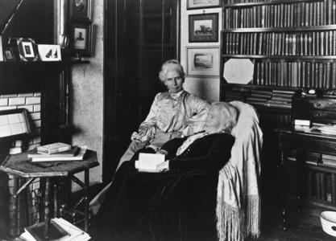

Biography
Elizabeth Blackwell was inspired to dedicate her life to a career in medicine when her dying friend told her that if she had a female physician helping her, she would have experienced less suffering. After being rejected no matter what medical schools she applied to, Blackwell was finally admitted to Geneva College in New York. Though, since she was a woman, the board sent her an acceptance letter as a joke. Clearly, Blackwell experienced immense amounts of gender discrimination because she was going into a field completely dominated by men. Some obstacles she faced because of her gender were that professors forced her to sit separately at lectures and often did not allow her to participate in labs. She was emotionally, mentally, and even physically segregated from her male peers. Even the local people shunned her for not succumbing to women's gender roles. It is obvious that this discrimination was in place to keep her from success, but Blackwell prevailed and graduated medical school to many people's astonishment. After completing school, she went on to train in hospitals, but was often forced to be a midwife or nurse because she was a woman. What the male doctors did not realize was that they were in need of a woman's perspective, intellect, and ideas. Blackwell noticed many things in the hospitals like the way that the male doctors would cause epidemics because they would not wash their hands between patients. She used everything she learned in medical school and her perspective on occurrences in the hospital to publish two books inspiring women follow their dreams to become doctors. Blackwell did many amazing things in her job and also for women in the workplace.